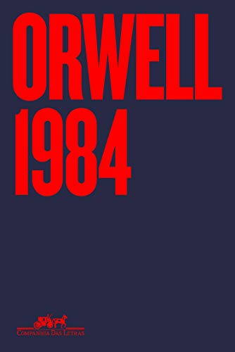
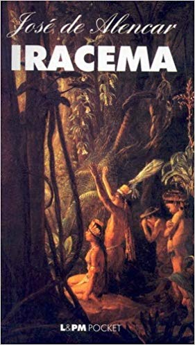
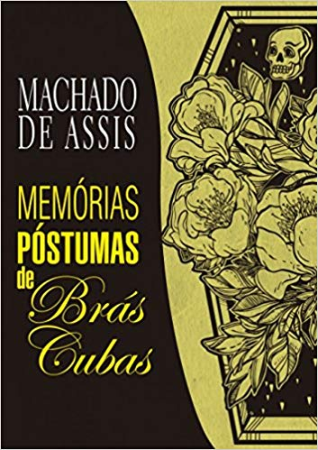
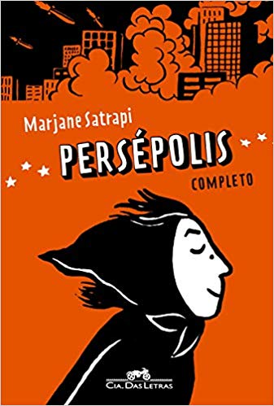

Ficção cientifica:
Blade Runner
I, robot
Laranja Mecânica
1984
Fahrenheit 451/h4>
O guia do mochileiro das galáxias: 1
Philip K Dick
Sinopse:
Em Androides sonham com ovelhas elétricas?, título original deste livro, Philip K. Dick cria uma atmosfera sombria e perturbadora para contar uma história impressionante, e abordar questões filosóficas profundas sobre a natureza da vida, da religião, da tecnologia e da própria condição humana. Esta nova edição conta com capa ilustrada por Rafael Coutinho, com design de Giovanna Cianelli. A cena imaginada por Coutinho homenageia o filme e retoma o ar policial noir do romance, ao mesmo tempo em que explora a atmosfera de dúvida e segredos presente na obra de Dick.
Isaac Asimov
Sinopse:
I, Robot, the first and most widely read book in Asimov’s Robot series, forever changed the world’s perception of artificial intelligence. Here are stories of robots gone mad, of mind-reading robots, and robots with a sense of humor. Of robot politicians, and robots who secretly run the world—all told with the dramatic blend of science fact and science fiction that has become Asimov’s trademark.
Anthony Burgess
Sinopse:
Uma das mais brilhantes sátiras distópicas já escritas, Laranja Mecânica ganhou fama ao ser adaptado em uma obra magistral do cinema pelas mãos de Stanley Kubrick. O livro, entretanto, também é um clássico moderno da ficção inglesa e um marco na cultura pop, que ao lado de 1984, de George Orwell, Admirável Mundo Novo, de Aldous Huxley, e Fahrenheit 451, de Ray Bradbury, representa um dos ícones literários da alienação pós-industrial.
George Orwell
Sinopse:
Com dezenas de milhões de cópias vendidas em todo o mundo, o romance de Orwell tem como herói o angustiado Winston Smith, refém de um mundo feito de opressão absoluta. Em Oceânia, ter uma mente livre é considerado crime gravíssimo. Numa trama em que os "fatos alternativos" estão por toda parte e a mentira foi institucionalizada, Winston se rebela contra a sociedade totalitária na qual vive; em seu anseio por verdade e liberdade, ele arrisca a vida ao se envolver amorosamente com uma colega de trabalho, Júlia, e com uma organização revolucionária secreta. Normalmente lido como uma distopia, 1984 é também uma sátira, uma profecia, um grito de alerta, um thriller de espionagem, uma extraordinária ficção científica, um terror psicológico, um romance pós-moderno e uma história de amor.
Ray Bradbury
Sinopse:
Fahrenheit 451 continua uma narrativa atual, alvo de estudos e reflexões constantes. O livro descreve um governo totalitário, num futuro incerto, mas próximo, que proíbe qualquer livro ou tipo de leitura, prevendo que o povo possa ficar instruído e se rebelar contra o status quo. Tudo é controlado e as pessoas só têm conhecimento dos fatos por aparelhos de TVs instalados em suas casas ou em praças ao ar livre. A leitura deixou de ser meio para aquisição de conhecimento crítico e tornou-se tão instrumental quanto a vida dos cidadãos, suficiente apenas para que saibam ler manuais e operar aparelhos. Fahrenheit 451 tornou-se um clássico não só na literatura, mas também no cinema. Em 1966, o diretor François Truffaut adaptou o livro e lançou o filme de mesmo nome estrelado por Oskar Werner e Julie Christie.

Douglas Adams
Sinopse:
O guia do mochileiro das galáxias é, sem dúvida, uma das mais criativas e cômicas histórias de aventura jamais escritas. Arthur Dent, um inglês azarado, escapa de um evento dramático - a destruição da Terra -, graças a um amigo de Betelgeuse que, enquanto estava ilhado em nosso planeta, havia se disfarçado de ator desempregado. Arthur se vê arrastado, apesar de seus protestos histéricos, para as situações mais alucinadas nos pontos mais distantes do tempo e do espaço. O que realmente sustenta este livro hilariante, através de sua viagem freneticamente bizarra pela galáxia rumo ao legendário planeta de Magrathea - e além -, é a pergunta profunda sobre o porquê. De onde viemos? Por que estamos aqui? Para onde vamos? Onde vamos almoçar hoje?
Terror:
Drácula
Gato preto
O Chamado de Cthulhu e Outros Contos
It: A coisa
O Exorcista
O Iluminado
Bram Stoker
Sinopse:
Bram Stoker é o criador genial de uma das mais famosas e horripilantes histórias de terror de todos os tempos. Drácula é uma história de vampiros e lobisomens, de criaturas que estando mortas permanecem vivas. Baseado no folclore da Transilvânia e num personagem real (o rei Vlad, o Empalador), redigiu um relato que tem assombrado gerações consecutivas de leitores, transformando-se num mito adaptado para o cinema, quadrinhos e TV, talvez o mais significativo destes últimos dois séculos.
Edgar Allan Poe
Sinopse:
A intrigante história de "O gato preto" é narrada em primeira pessoa pelo personagem sombrio que desde criança possui uma grande afeição por animais, mas o destino mostra-se assustador quando um gato preto aparece em sua vida. Nesses quadrinhos desfrutamos um pouco do mistério, do fantástico e da alma do ser humano, que se revela aterrorizadora. Uma leitura imperdível.
H. P. Lovecraft
Sinopse:
H. P. Lovecraft é considerado um mestre do terror e suas historias conduzem os leitores por ambientes macabros e impregnados de perversidade. Com enredos muitas vezes inspirados por seus constantes pesadelos, a obra de Lovecraft é marcada pelo simbolismo e encerra a visão de que o universo é sem sentido e indiferente ao sofrimento humano e de que o homem é insignificante diante do poder do imenso e desconhecido universo cósmico
Stephen King
Sinopse:
Durante as férias escolares de 1958, em Derry, pacata cidadezinha do Maine, Bill, Richie, Stan, Mike, Eddie, Ben e Beverly aprenderam o real sentido da amizade, do amor, da confiança e... do medo. O mais profundo e tenebroso medo. Naquele verão, eles enfrentaram pela primeira vez a Coisa, um ser sobrenatural e maligno que deixou terríveis marcas de sangue em Derry. Quase trinta anos depois, os amigos voltam a se encontrar. Uma nova onda de terror tomou a pequena cidade. Mike Hanlon, o único que permanece em Derry, dá o sinal. Precisam unir forças novamente. A Coisa volta a atacar e eles devem cumprir a promessa selada com sangue que fizeram quando crianças.
William Peter Blatty
Sinopse:
Quatro décadas após chocar o mundo inteiro, a obra-prima de William Peter Blatty permanece uma metáfora moderna do combate entre o sagrado e o profano, em um dos romances mais macabros já escritos.. O mal assume várias formas. Seja com monstros, fantasmas ou demônios, tanto a literatura quanto o cinema sempre foram bem-sucedidos em representar a essência do nosso lado mais reprovável.
Stephen King
Sinopse:
Danny Torrance não é um menino comum. Danny é capaz de ouvir pensamentos. Ele pode transportar-se no tempo e olhar o passado e o futuro. Danny é um iluminado. Maldição ou benção? A resposta pode estar guardada na imponência assustadora do hotel Overlook.Quando Jack Torrance consegue o emprego de zelador do velho hotel todos os problemas da família parecem estar solucionados. Não mais o desemprego e as noites de bebedeiras. Não mais o sofrimento da esposa Wendy. Tranquilidade e ar puro para o pequeno Danny livrar-se de vez das convulsões que assustam a família. Só que Overlook não é um hotel comum.
Romance:
Iracema
Memórias Póstumas de Brás Cubas
A Cidade e as Serras
Auto Da Compadecida
Hamlet
Romeu e Julieta
José de Alencar
Sinopse:
Iracema é uma virgem tabajara - tribo que, durante a colonização, luta contra os portugueses a favor dos franceses - e se apaixona por Martim, um conquistador luso, numa história de amor que procura sintetizar contradições do então nascente povo do Brasil.
Machado de Assis
Sinopse:
Seu tom cáustico marcou o início do novo estilo da obra de Machado de Assis, com audácia e inovação temática. Ao retratar um Rio de Janeiro e sua época com pessimismo, ironia e indiferença, é amplamente considerada a obra que iniciou o Realismo no Brasil e que, com este romance, Machado de Assis precedeu elementos do Modernismo e do realismo mágico de escritores como Jorge Luis Borges e Julio Cortázar. Alguns autores também a chamam de primeira narrativa fantástica do Brasil, o que demonstra a amplitude de sua influência e importância e é, sem dúvida uma das obras mais revolucionárias e inovadoras da literatura brasileira.
Eça de Queirós
Sinopse:
Romance da última fase de Eça de Queirós, publicado em 1901, um ano após a morte do escritor. Nele são narradas as diferenças entre a vida rural e a urbana por meio da figura de Jacinto, fidalgo português que mora em Paris em meio a um aparato técnico e moderno que, segundo ele, traduz o homem civilizado, mas que não lhe dá satisfação e felicidade, as quais, para espanto de Jacinto, serão encontradas durante uma viagem à província natal, em meio à vida simples e campesina das serras portuguesas.
Ariano Suassuna
Sinopse:
O "Auto da Compadecida" consegue o equilíbrio perfeito entre a tradição popular e a elaboração literária ao recriar para o teatro episódios registrados na tradição popular do cordel. É uma peça teatral em forma de Auto em 3 atos, escrita em 1955 pelo autor paraibano Ariano Suassuna. Sendo um drama do Nordeste brasileiro, mescla elementos como a tradição da literatura de cordel, a comédia, traços do barroco católico brasileiro e, ainda, cultura popular e tradições religiosas. Apresenta na escrita traços de linguagem oral [demonstrando, na fala do personagem, sua classe social] e apresenta também regionalismos relativos ao Nordeste. Esta peça projetou Suassuna em todo o país e foi considerada, em 1962, por Sábato Magaldi "o texto mais popular do moderno teatro brasileiro."
William Shakespeare
Sinopse:
Hamlet, de William Shakespeare, é uma obra clássica permanentemente atual pela força com que trata de problemas fundamentais da condição humana. A obsessão de uma vingança onde a dúvida e o desespero concentrados nos monólogos do príncipe Hamlet adquirem uma impressionante dimensão trágica. Nesta versão, Millôr Fernandes, crítico contumaz dos eruditos e das eruditices que, nas traduções, acabam por comprometer o sentido dramático e poético de Shakespeare, demonstra como o Bardo pode ser lido em português com a poderosa dramaticidade do texto original. Aqui, Millôr resgata o prazer de ler Shakespeare, o maior dramaturgo da literatura universal, em uma das suas obras mais famosas.
William Shakespeare
Sinopse:
Há muito tempo duas famílias banham em sangue as ruas de Verona. Enquanto isso, na penumbra das madrugadas, ardem as brasas de um amor secreto. Romeu, filho dos Montéquio, e Julieta, herdeira dos Capuleto, desafiam a rixa familiar e sonham com um impossível futuro, longe da violência e da loucura. Romeu e Julieta é a primeira das grandes tragédias de William Shakespeare, e esta nova tradução de José Francisco Botelho recria com maestria o ritmo ao mesmo tempo frenético e melancólico do texto shakespeariano. Contando também com um excelente ensaio introdutório do especialista Adrian Poole, esta edição traz nova vida a uma das mais emocionantes histórias de amor já contadas
Quadrinhos:
Persepolis
Uzumaki
A vida segundo Peanuts
Vagabond
Akira
Guerra Civil
Marjane Satrapi
Sinopse:
Marjane Satrapi tinha apenas dez anos quando se viu obrigada a usar o véu islâmico, numa sala de aula só de meninas. Nascida numa família moderna e politizada, em 1979 ela assistiu ao início da revolução que lançou o Irã nas trevas do regime xiita - apenas mais um capítulo nos muitos séculos de opressão do povo persa. Vinte e cinco anos depois, com os olhos da menina que foi e a consciência política à flor da pele da adulta em que se transformou, Marjane emocionou leitores de todo o mundo com essa autobiografia em quadrinhos, que só na França vendeu mais de 400 mil exemplares. Em Persépolis, o pop encontra o épico, o oriente toca o ocidente, o humor se infiltra no drama - e o Irã parece muito mais próximo do que poderíamos suspeitar.
Junji Ito
Sinopse:
Kurôzu-cho, a small fogbound town on the coast of Japan, is cursed. According to Shuichi Saito, the withdrawn boyfriend of teenager Kirie Goshima, their town is haunted not by a person or being but by a pattern: uzumaki, the spiral, the hypnotic secret shape of the world. It manifests itself in everything from seashells and whirlpools in water to the spiral marks on people's bodies, the insane obsessions of Shuichi's father and the voice from the cochlea in our inner ear. As the madness spreads, the inhabitants of Kurôzu-cho are pulled ever deeper into a whirlpool from which there is no return!.

Charles M. Schulz
Sinopse:
O que os personagens dos quadrinhos sabem sobre a vida? Muito, quando eles refletem os sentimentos de um dos desenhistas mais cultuados do mundo, o primeiro a fazer da vida o tema principal de suas tiras. Este guia apresenta as clássicas e espirituosas observações de Charles M. Schulz sobre a condição humana, além de seus mais valiosos conselhos, por meio de seus personagens. Estão todos aqui: Charlie Brown, Snoopy, Sally, Lucy, Linus, Schroeder, Patty Pimentinha, Marcie, Woodstock, Rerun, neste bem-humorado livro sobre a filosofia de viver - e de dar boas risadas.
Takehiko Inoue
Sinopse:
Baseado no romance épico de Eiji Yoshikawa, escrito e ilustrado pelo mestre Takehiko Inoue, este clássico dos quadrinhos é uma das obras mais premiadas e fiéis à lenda do maior herói do Japão! Em 1600 d.C., o Japão passa por um dos períodos mais turbulentos de sua história. O jovem Takezo, ao lado de seu amigo Matahachi, deixa a vila Miyamoto para lutar na Batalha de Sekigahara. Embora sonhem com fama e glória, eles somente encontram a derrota e um caminho repleto de incertezas. Acompanhe a jornada de combates sanguinolentos e desafios espirituais desse destemido espadachim, que ficou conhecido pela posteridade como o grande samurai Miyamoto Musashi!
Katsuhiro Otomo
Sinopse:
Após atropelar uma criança de aparência estranha, Tetsuo Shima (o melhor amigo de Kaneda), começa a sentir algumas reações anormais. Isso acaba chamando a atenção do governo que está projetando diversas experiências secretas e acabam sequestrando Tetsuo. Nesta aventura cheia de ficção, Kaneda entra em cena para salvar o amigo, enquanto uma terrível e monstruosa entidade ameaça despertar.
Mark Millar
Sinopse:
A ação precipitada de um grupo de jovens super-heróis acarreta uma tragédia sem precedentes, deixando um saldo de centenas de mortos. Diante da pressão popular, o governo sanciona uma lei determinando que todos os superseres sejam registrados. A iniciativa divide a comunidade heroica como nunca antes. De um lado, a facção pró-registro, liderada pelo Homem de Ferro; do outro, os contrários à medida, tendo à frente o Capitão América.